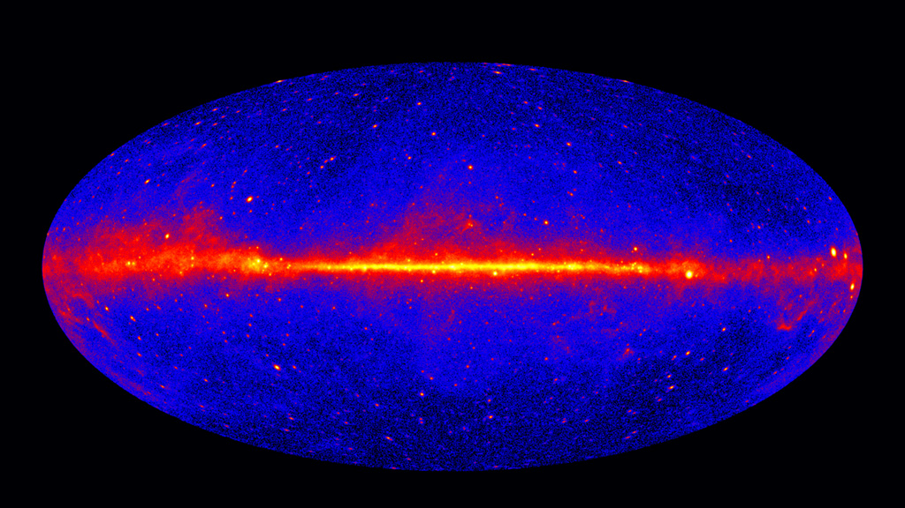

GAMMA RAYS
Gamma rays are the most energetic, shortest-wavelength form of electromagnetic radiation. Produced by radioactive decay, nuclear explosions, and extreme cosmic events.
Science Nasa
Gamma rays in the Milky Way, ©Fermi spacecraft NASAFUN FACT
Supernovas and gamma-ray bursts can release more energy in seconds than the Sun will emit over its entire lifetime.
 ©NASA, ESA, M. Kornmesser
©NASA, ESA, M. Kornmesser